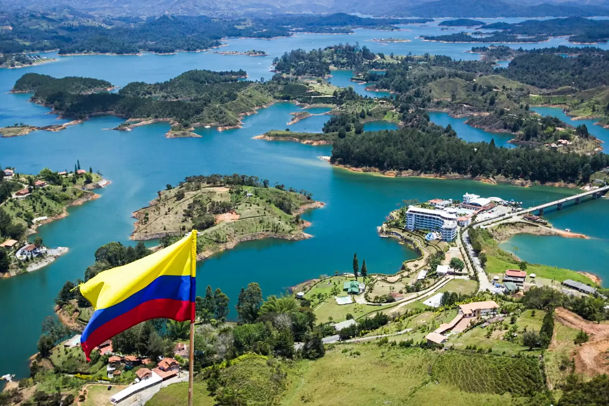

Ruta en Colombia
Viaje soñado por Colombia Nuestro próximo gran destino es Colombia, ¡y no podemos estar más emocionados! La ruta que planeamos combina playas de ensueño, selvas, pueblos mágicos y mucha aventura. Empezaremos en Santa Marta, una ciudad vibrante al norte del país, puerta de entrada a los paisajes más lindos del Caribe colombiano. Desde ahí, vamos directo al famoso Parque Tayrona, donde pensamos recorrer senderos entre la selva y descubrir playas escondidas, aguas cristalinas y naturaleza en estado puro. Luego, nuestra parada será Minca, un pequeño paraíso en las montañas, conocido por sus cascadas, miradores y ambiente tranquilo. Nos imaginamos caminando por la selva, tomando café local y disfrutando de atardeceres increíbles. Después, bajamos rumbo a la colorida Cartagena de Indias. Queremos perdernos por las calles empedradas, descubrir la ciudad amurallada y sentir el ritmo caribeño entre plazas, balcones y murales. Como broche de oro, ¡volamos a las islas! Primero, San Andrés, con sus aguas turquesas, corales y playas de arena blanca. Y si podemos, el gran sueño: Providencia, una isla más tranquila y auténtica, ideal para desconectar, hacer snorkel y relajarnos lejos de las multitudes. ¿Te sumás a la aventura? Colombia nos espera con su calor, su gente y sus paisajes únicos. ¡Pronto vamos a estar contando todo en este blog!